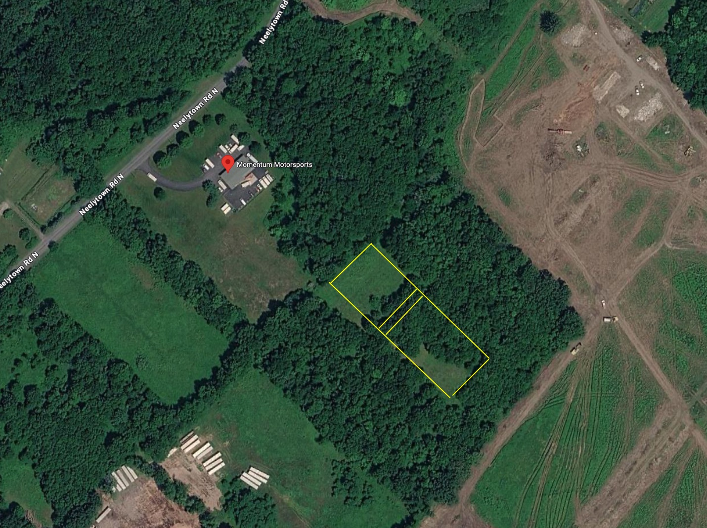

Order-by dates — not need-by — are what matter now. Full timeline in §1.
| Project | Owner(s) | Order / engage by | Ready by |
|---|---|---|---|
| P1 · Warehouse + tents | Max (Marco teams) | This week | ~Jun 14 |
| P2 · Prop house | Max + Marco; Alec (structure) | ~Jun 6 | ~Jun 20 |
| P3 · Irrigation | Alec (lead) + Soilscape/RainFlo/Netafim | Scope w/ Alec now; parts ~Jun 9 | Before transplant |
| P4 · Pot matrix | Max + all-hands; Alec (tractor) | This week | ~Jun 24 |
| Trellis + deer fence | Max + Marco; Alec (layout) | ~Jun 9 | By transplant |
| Person | Role |
|---|---|
| Marco | Head of Resin Quality Management — trichome monitoring, harvest-timing advice, fresh-frozen optimization. Teams with Max on the build. |
| Steven | Remote monitoring & crop nutrition. |
| Athena Ag (Brett & Owen) | Advisors — nutrient & pest/disease protocol, spacing, fill-system guidance. |
The whole season turns on one moment: moving rooted young plants out of small pots and into the field. That is the transplant. Everything below exists to make that moment happen on time and without scramble.
The plants travel through four places, in order:
The four build projects run in parallel, not one after another. Projects 1 and 2 carry the plants through their early life; Projects 3 and 4 prepare the field to receive them. The timeline below shows how they overlap and where they must converge.
Blowing the timeline is the single most likely way this season goes sideways. So timing comes first, and every project below repeats its own "order by / build / ready by" dates. Read this section before anything else.
| Task / Week | Jun 1–7 | Jun 8–14 | Jun 15–21 | Jun 22–28 | Jun 29–Jul 5 |
|---|---|---|---|---|---|
| Order / engage (long-lead) | |||||
| Site & pad prep, deer fence | |||||
| P1 · Warehouse + tents | |||||
| P2 · Prop house | |||||
| P3 · Irrigation design | |||||
| P3 · Irrigation install | |||||
| P4 · Soil delivered | |||||
| P4 · Place + fill pots | |||||
| Clones arrive → tents | |||||
| Up-pot to 4″ · settle | |||||
| Harden off in prop house | |||||
| ★ TRANSPLANT to field |
Irrigation design (engage now) → soil delivered → pots placed & filled → drip run to every pot → field 100% ready → ★ transplant when roots show (~Jun 24–26).
The plant journey (clones → tents → up-pot → harden off) runs on its own biological clock and largely takes care of itself. The risk is all on the field side. If irrigation design slips in week one, every step behind it slips too — which is why engaging the designer is the most time-sensitive single decision in this document.
| Item | Why it has lead time | Order / engage by |
|---|---|---|
| Irrigation design | Design must finish before parts can be ordered and laid | This week (Jun 2–6) |
| Soil (bulk) | Vermont Compost + McEnroe quoted; book delivery now — 2–3 wk lead; ~4 loads (40–60 yd) | This week |
| 45-gal pots (1,030) | Volume order may backorder or ship freight | This week |
| Grow tents + LED + climate kit | Must arrive and be built before clones (~Jun 15) | This week |
| Prop-house tunnel + shade cloth | Must be standing before plants leave warehouse (~Jun 21) | By ~Jun 6 |
| Irrigation parts | Ordered right after design lands | By ~Jun 9 |
| Deer fence + trellis materials | Perimeter and trellis go up before/with transplant | By ~Jun 9 |
| Tractor sprayer | Needed for first preventative spray after transplant | By ~Jun 20 |
A top-down schematic of the field: rows, plant pairs, the irrigation backbone, water and pump location, and the deer-fence perimeter. This is a working sketch to align on layout — not a survey.

Aerial of the site off Neelytown Rd N (near Momentum Motorsports). Yellow outline = the planned field area; the schematic below works out the row layout. Real dimensions still to be confirmed from a survey.
Plant pairs are shown representatively, not counted one-for-one. Manifold dots (violet) sit at each row head where the main line feeds that row's drip sub-line.
Turn the existing dirty warehouse into a clean, climate-controlled room where clones recover under lights for their first days, and again briefly after up-potting.
| Stage | Temp | Humidity | VPD | PPFD | Light |
|---|---|---|---|---|---|
| Clone recovery (first days) | 70–78°F | 70–85% | 0.6–0.9 kPa | 100–250, ramp gently | 18h on / 6h off |
| Early veg (after up-pot) | 72–82°F | 58–75% | 0.8–1.0 kPa | 300–600 | 18/6, blue-dominant |
Sources (Jun 2026): Athena Ag veg-stage protocol (72–82°F, RH 58–75%, VPD 0.8–1.0, PPFD 300–600, LED 18–24″ off canopy); Blimburn / Pulse / MaryJane.farm for clone-stage ranges; Ed Rosenthal / Koolfog on LED leaf-temp offset. Treat as heuristics.
| Item | Why | Qty (1,000 plants) | Ballpark |
|---|---|---|---|
| Grow tent, 10′×20′ | Sealed, reflective recovery space | 1–2 (Max confirms) | $2,000–2,500 ea |
| LED grow light (veg/clone grade) | Low-to-moderate light for young plants | per tent coverage | $400–1,500 |
| Commercial humidifier | Clones need high humidity | 1–2 | $150–600 |
| Carbon filter + inline fan | Air exchange + filtration; sized to tent CFM | 1 per tent | $150–400 |
| Oscillating fans | Airflow, stem strength, mold prevention | 2–4 | $100–300 |
| Temp/humidity controller (remote-capable) | Hold + monitor conditions; alerts | 1 per tent | $80–250 |
| Temp control (portable AC / heater / mini-split) | Hold a stable range | as needed | $300–2,000 |
| Cleaning + sanitizer supplies | Deep clean before plants | bulk | $100–300 |
| Project 1 subtotal (rough) | ~$3,300–11,000 | ||
Tent/LED prices: LED Grow Lights Depot, HTG Supply, Growers House (Jun 2026). Other items: commodity ranges, rough estimate — verify with quotes. Scales weakly with plant count; driven mostly by tent count.
Effort: roughly 40–70 person-hours, ~2 people, spread across week one (clean is the time sink; assembly and climate are fast). Estimate — refine with Max.
A simple covered hoop tunnel right outside the warehouse where up-potted plants harden off — adjusting to real sun, wind, and outdoor air — before the field.
A hoop / caterpillar tunnel (curved steel bows, covered) sized to hold ~1,000 plants in 4-inch pots, with shade cloth over the top to cut harsh midday sun. Not a heated glass greenhouse — a fast, affordable shelter.
1,000 four-inch pots packed edge-to-edge cover only ~110 sq ft, but pots need walking room, table gaps, and airflow. Rather than size it tight, plan for breathing room:
| Element | Recommended range | Reasoning |
|---|---|---|
| Table surface for pots | ~250–400 sq ft | ~2–3.5× the packed pot footprint, for spacing + airflow |
| Tunnel footprint | ~16′×40′ to 20′×50′ (≈640–1,000 sq ft) | Leaves aisle + working room; err larger — extra space is cheap insurance against crowding and mold |
Erring large here is deliberate: crowding young plants is a disease risk, and a bigger tunnel costs only a little more at ~$2–5/sq ft. The owner finalizes the size against the actual table build and site.
| Item | Why | For 1,000 plants | Ballpark |
|---|---|---|---|
| Hoop / caterpillar tunnel kit (incl. 6-mil cover) | The structure | ~640–1,000 sq ft | $1,300–5,000 |
| Shade cloth (roof + ends) | Prevents sun scorch on young plants | sized to structure | $150–600 |
| Tables (sawhorse + ply/mesh or racking) | Keep pots off hot asphalt | ~250–400 sq ft surface | $300–1,500 |
| Basic drip lines + timer | Water trays without standing there | 1 small zone | $150–500 |
| Fertilizer-mixing setup (batch tank + measuring) | Mix nutrients into the water | 1 | $100–400 |
| Fans | Airflow, stem strength, mold prevention | 2–4 | $100–400 |
| Project 2 subtotal (rough) | ~$2,100–8,400 | ||
Tunnel pricing: Farmers Friend ($1.77–2.02/sq ft kits), Bootstrap Farmer (<$5/sq ft built; 20′×100′ ~$1,600 kit), Jun 2026. Tables can be near-free from scrap lumber/pallets. Mostly fixed cost; does not scale much with plant count.
Effort: roughly 50–90 person-hours, ~3–4 people, ~3–5 days (tunnel raise + tables are the bulk). Estimate — refine with the leads.
Get pressurized water — with nutrients mixed in ("fertigation") — from the 10,000-gallon store out to every one of the 1,000 pots, evenly and on a timer.
This is more than a tank. It is a Pump & Delivery System sized to feed 1,000 drip emitters evenly. Its core parts:
Pump & delivery skid → main line out to the field → a manifold (a junction) at the head of each row → a sub-line down each row → one drip emitter into each pot. About 16 manifolds, ~3,200 ft of sub-line, and 1,000+ emitters.
Parts counts scale cleanly (1 emitter per plant, 1 manifold per row). Parts sizing (pump, pipe diameter, regulator) comes from the design. Treat the table as the shopping frame; the designer fills exact specs and firm prices.
| Component | What it does | For 1,000 plants | Ballpark |
|---|---|---|---|
| Pump + filtration + pressure regulation | Pressurize + protect emitters + hold steady pressure | 1 set, sized to design | $800–3,500 |
| Nutrient injector (fertigation) | Mix nutrients into the water | 1 | $300–1,500 |
| Controller / timer | Unattended scheduled watering | 1 | included / $100–500 |
| Main line + ~16 manifolds + sub-line (poly) + fittings | Carry + split water to rows | ~3,200 ft sub-line | $1,000–4,000 |
| Drip emitters + stakes | Deliver water to each pot | 1,000+ (+ spares) | $300–1,000 |
| Captive-air tank (optional) | Anti short-cycle / hose pressure | Alec: likely skip | $0–800 |
| Project 3 subtotal (rough) | ~$2,500–11,000 | ||
Component ranges are commodity/market estimates, Jun 2026; the design quote replaces them. Sub-line and emitter counts scale linearly with plant count.
Effort: design is separate (designer + Alec). Install across 16 rows is the labor item: roughly 80–160 person-hours, ~3–4 people over several days, overlapping pot placement. Estimate — refine after design.
Place ~1,000 forty-five-gallon fabric pots in the field in the right pattern, fill them with soil, cap with mulch, and have them ready for the drip lines.
The goal is roughly 5′×5′ to 5′×6′ of space per plant — enough that mature plants in 45-gallon pots aren't crowded, which protects airflow and cuts mold risk. We reach that spacing logically with 10-foot-wide trellis rows holding two plants across the width (each plant gets ~5′ of the 10′), and pairs repeating every ~5–6′ down the length of the row. Putting two plants across each row means we need about half as many rows as planting single-file — less trellis, less drip line, less walking.
| Measure | Value | Plain meaning |
|---|---|---|
| Trellis / row width | 10 ft | 2 plants across, ~5′ apart |
| Spacing between pairs (down-row) | ~5–6 ft | Gives 5′×5′ to 5′×6′ per plant |
| Plants per 200-ft row | ~66 (at 6′) to ~80 (at 5′) | Pairs × 2 |
| Rows for 1,000 plants | ~13–16 | Baseline 16 at the airier 5′×6′ |
| Tractor aisle between rows | ~6 ft | So a tractor + sprayer can drive every inter-row |
A 45-gallon fabric pot holds about 6 cubic feet brim-full (27″ across × 18″ tall); we fill to ~85% ≈ 5.1 cu ft each. For 1,000 pots:
This is the exact workflow Brett used to fill 45-gallon pots at volume. The key to speed is that the skid steer never stops moving.
| Step | Action |
|---|---|
| 1 | Dump close. Each soil truck holds ~40–60 yd and dumps directly in the field, as near the crew as possible — about 4 loads for the ~190 yd. Closer dumps cut walking. |
| 2 | Shuttle continuously. A car-hauler trailer is hooked to the farm truck; a skid steer runs non-stop between the soil pile and the trailer, keeping it loaded. |
| 3 | Fill off the trailer. Truck + trailer inch forward down the row while the crew fills pots straight off the trailer with shovels. |
| 4 | Mulch. Cap each filled pot with mulch so the soil doesn't bake and dry. |
| 5 | Drip. Project 3's emitters get run to each pot. |
Brett's experienced crew of 8–9 filled 1,500–2,000 pots per day, split as: 1 truck driver, 1 skid-steer driver, 2 setting pots in place, 5 shoveling.
| Plant count | At ~800/day | Budget (with margin) |
|---|---|---|
| 800 | 1 day | 2 days |
| 1,000 (baseline) | ~1.25 days | 2 days |
| 1,200 | 1.5 days | 3 days |
| Item | For 1,000 plants | Per-plant rate | Ballpark |
|---|---|---|---|
| 45-gal woven fabric pots | 1,030 (+3% spare) | 1.03 | $4,600–8,200 |
| Soil — bulk organic blend (by the yard) | ~190 cu yd | 0.19 cu yd | $9,500–28,500 |
| Mulch (cap layer) | all pots, depth TBD | per pot top | $200–1,000 |
| Skid steer (rental if not owned) | 1, ~2 days | — | $0–1,000 |
| Car-hauler trailer + farm truck | 1 each | — | owned / $0–300 |
| Shovels + hand tools | 5–6 | — | $100–300 |
| Surge labor (beyond owners) | ~4–5 hands × 2 days | — | $1,300–3,000 |
| Project 4 subtotal (rough) — soil-driven | ~$15,700–41,800 | ||
Pots: 247Garden / HTG / GrowGeneration bulk pricing ($4.28–6.48+ ea), Jun 2026. Pots and soil scale linearly with plant count; equipment is fixed.
Effort: the fill itself is ~140–160 person-hours (8–9 crew × ~2 days), plus pot placement and drip hookup. The all-hands day(s). Estimate — refine with Max + Brett's guidance.
The field infrastructure around the pots: what holds the plants up, how the tractor gets through, what keeps deer out, and whether to plan for late-season rain protection.
Each 10-foot-wide row is trellised to support the plants. Critically, we want a ~6-foot aisle between every row so a tractor with a mounted implement can drive each inter-row — for spraying (a tractor-mounted sprayer), mowing, and general work. Leave ~15–20 ft of headland at each row end for the tractor to turn. Aisle width should be confirmed against the actual tractor + implement before rows are pegged out.
An option worth weighing now: driving in tall posts (~12 ft) along the rows that serve double duty — trellis support and a frame to pull plastic over the plants late in flower if heavy rain threatens. Covered ("cold-frame") outdoor plants often finish cleaner, because keeping rain off dense late-season flower is one of the best defenses against bud rot.
| Option | What it gives | Trade-off | Rough cost |
|---|---|---|---|
| Plain trellis only | Plant support | No rain protection late season | $2,000–6,000 |
| Tall posts now, plastic only if needed | Support + the option to cover | Heavier posts up front; plastic bought later | +$1,000–3,000 over plain |
| Full cold-frame cover | Support + rain protection + cleaner finish | Most cost/labor; wind management | +$1,000–5,000 over plain |
Costs rough, Jun 2026 — confirm with a structures quote. The middle option (tall posts now, plastic on standby) is often the sensible hedge: low extra cost, keeps the door open.
A perimeter deer fence (~8 ft tall, ~1,000 linear feet) protects the entire crop — deer can destroy an outdoor planting fast and jump short fences. Put a temporary hot-wire or mesh up before transplant if the permanent fence isn't finished.
| Approach | Per foot | ~1,000 LF | Note |
|---|---|---|---|
| DIY woven-wire / poly mesh, 8 ft | $2–6 | $2,000–6,000 | Farm labor does it; most cost-effective |
| Professionally installed | $5–12 | $5,000–12,000 | Faster, higher upfront |
Deer-fence pricing: HomeGuide, dtefence, Angi, Design Transition Studio (Jun 2026). Scales with perimeter, which scales with field size/row count.
A plan for keeping plants healthy with sprays that are legal in New York cannabis, organic-approved, and safe for resin quality and extraction.
| Mode | Purpose | Typical organic categories to verify |
|---|---|---|
| Preventative (scheduled) | Stop problems before they start — the bulk of the program | Biological fungicides (e.g., Bacillus-based), neem/azadirachtin-type botanicals, beneficial insects/biocontrols, foliar plant-health inputs — each to be confirmed OCM-allowed |
| Reactive (as-needed) | Knock down a specific pest or disease on detection | Targeted OMRI insecticidal/fungicidal actives matched to the diagnosed problem — confirmed OCM-allowed and extraction-safe |
A tractor-mounted sprayer lets one person cover the field quickly. A standard 60-gallon 3-point-hitch unit with pump and boom runs roughly $700–1,800.
Which plants we run matters as much as how we grow them. For NY outdoor, the genetics should be chosen to survive a wet Northeast finish and beat the frost.
Prioritize cultivars by these traits, in roughly this order:
Who does what (likely, pending discussion), roughly how much labor each project takes, and the standard we hold for anyone we bring on.
| Person | Likely scope |
|---|---|
| Max | Primary on most things. Leads the grow tents and the care of the plants; crew lead on the pot fill. Marco teams with him across these areas. |
| Marco | Head of Resin Quality Management — monitors resin-head (trichome) development through flower and advises on harvest timing. Works with Alex to optimize the fresh-frozen operation (cut→freeze window). Teams with Max on grow tents, prop house, and the fill. |
| Alec | Leads irrigation (he raised it and is scoping the approach; quotes from Soilscape / RainFlo / Netafim). Also: water test, greenhouse/structure design input, tractor driving during the fill, plant health, and setting up cameras, sensors, and remote data/monitoring. |
| Steven | Remote monitoring & crop nutrition — watches the remote sensor feeds (tent/prop climate, field soil-moisture) and the plants’ nutritional status (tissue-test results, fertigation EC/pH), flagging drift early. Partners with Alec on the data side and Athena Ag on the feed program. |
| Athena Ag (Brett & Owen) | Advisors — nutrient and pest/disease protocol, fill-system guidance, spacing. Not on-site owners. |
| Project | Person-hours | People | Window |
|---|---|---|---|
| P1 · Warehouse + tents | ~40–70 | 2 | Week 1 |
| P2 · Prop house | ~50–90 | 3–4 | Weeks 1–2 |
| P3 · Irrigation install | ~80–160 | 3–4 | Weeks 2–4 |
| P4 · Pot fill (all hands) | ~140–160 | 8–9 | Weeks 3–4 |
| Trellis + deer fence | ~60–120 | 2–4 | Weeks 1–4 |
Protecting the crop physically, watching conditions remotely, and being disciplined about who knows what.
| Item | Ballpark |
|---|---|
| Security camera system (4–8 cams, cellular/solar if needed) | $300–2,000 |
| Environmental sensors (tents/prop) with remote alerts | $100–800 |
| Soil-moisture sensors (field) with remote readout | $100–1,000 |
The per-project equipment tables above are the full purchase list. This rolls them into one budget. Items that scale with plant count are noted.
| Line | Ballpark range | Scales with plants? |
|---|---|---|
| P1 · Warehouse + grow tents | $3,300–11,000 | Weakly (tent count) |
| P2 · Propagation house | $2,100–8,400 | Weakly (mostly fixed) |
| P3 · Irrigation & fertigation | $2,500–11,000 | Yes (emitters, sub-line) |
| P4 · Pot matrix (pots + soil + fill) | $15,700–41,800 | Yes — soil & pots linear |
| Trellis + tractor access | $2,000–6,000 | Yes (row count) |
| Deer fence (~1,000 LF) | $2,000–12,000 | Yes (perimeter) |
| Cold-frame option (if chosen) | $0–5,000 | Yes (row count) |
| Tractor-mounted sprayer | $700–1,800 | No |
| Cameras + sensors | $500–3,800 | No |
| Clones (~1,000 @ ~$10) | ~$10,000 | Yes (linear) |
| Indicative total (excl. reefer, already committed) | ~$38,800–110,800 |
Named honestly and in order of likelihood, with the move that prevents each. Awareness is the cheapest insurance.
| # | Failure mode | Why it's likely | Prevention |
|---|---|---|---|
| 1 | Timeline slip — field not ready when roots show | Four parallel builds + long-lead orders + a hard biological deadline | Order the week-one list now; protect the critical path (design → soil → fill → drip); pad the fill to 2 days |
| 2 | Watering failure — uneven or interrupted water | 1,000 emitters on one system; a pump or clog fails silently | Use a designer; filtration; controller with alerts; soil-moisture sensors; daily checks |
| 3 | Disease in a wet finish — botrytis / septoria | Northeast fall is humid and rainy; dense flower traps moisture | Airflow-first spacing (5′×6′), resistant + early genetics, preventative spray calendar, cold-frame option on standby |
| 4 | Bottleneck breaks the plant flow — heat on asphalt, fill jams, clone quality | Asphalt cooks pots; first-time fill crew; clones can arrive weak | Tables off asphalt + shade cloth; conservative fill plan + all-hands; inspect clones on arrival, isolate anything suspect |
| 5 | Security / labor — theft, deer, or a weak hire | High-value outdoor crop; seasonal hiring pressure; open site | Deer fence + cameras before transplant; high hiring bar; approve all visitors; share information narrowly |
The holes. None are papered over with guesses. Each needs an answer to lock the plan.